交易 UX board v2
v2 覆盖产品内页（详情/交易台/工作台），非仅营销首屏。只含 UX 观察，无风格推导；与 visual-moodboard.html 物理隔离。pump.fun blocked×3（DOM 事实在 study）；four.meme 为用户手动截图（地区封锁）。
模块〇 · Outrun 旧版 demo（过时产物 · 非真相源 · 仅历史参照）
用户裁定：上一版本产物，与现行产品差异大。只看「上一版做过的 UX 选择」（三段式 IA/五 Tab/Swap 审阅行）；冲突处以 architecture.md + OutrunBook 为准；勿复刻其导航命名（OutStake 为裁定前旧 IA）
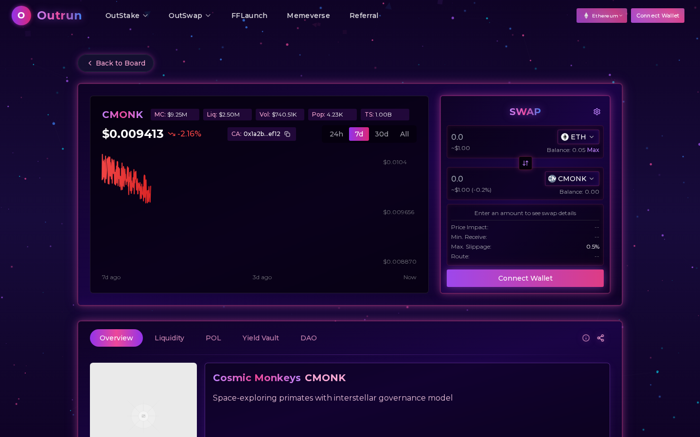
PU-000 旧版 demo · 桌面（过时产物） 左 K 线+右 Swap+底部五 Tab（Overview/Liquidity/POL/Yield Vault/DAO）
80070ac7…c872e
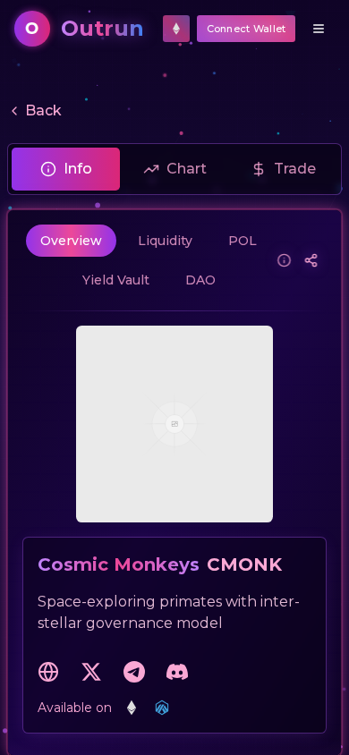
PU-000 旧版 demo mobile（过时产物） 三段式退化单列流
5a5aa290…10c9f
模块一 · Memecoin LaunchPad
四阶段生命周期指示器（four.meme）· 迁移横幅+MC 进度（letsbonk）· 买卖 Tab+滑点+Half/Max
PU-003r four.meme /en/ranking 表格型列表：价格/24h 涨跌带色/市值/流动性/进展列+筛选器（换 IP 后程序捕获）
5e6d1bf4…4aed02
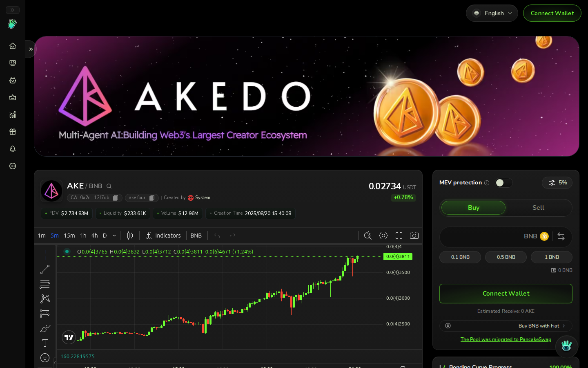
PU-003t four.meme 代币详情 四阶段生命周期指示器（创建→拉升→解决→迁移）+K 线+订单簿+交易卡双栏
0dcbf8d7…637089
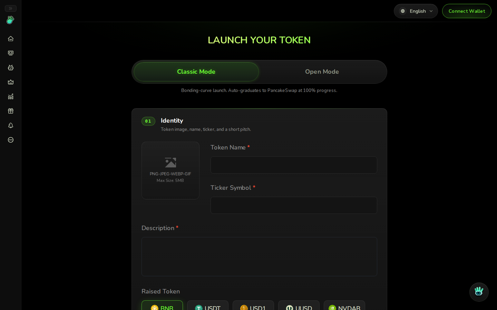
PU-003c four.meme 创建表单 /en/create-token 字段分组
fb1b4d4b…da666a
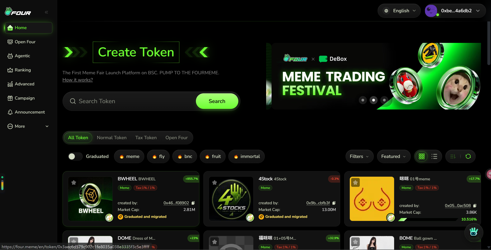
PU-003u four.meme 详情（用户手动截图，保留） 另一代币实例：买卖 Tab+滑点+费率 1% 提示+审阅折叠
f2633c8b…fe61
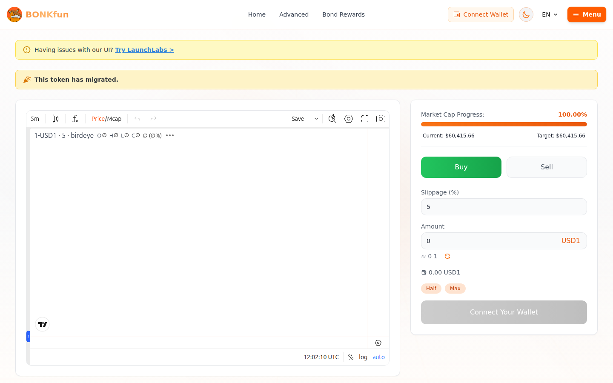
PU-002d letsbonk 代币详情 「已迁移」横幅+MC 进度 100%（$60,415.66 目标线）+Buy/Sell Tab+滑点 5%+Half/Max
ffcb57b3…5ea8
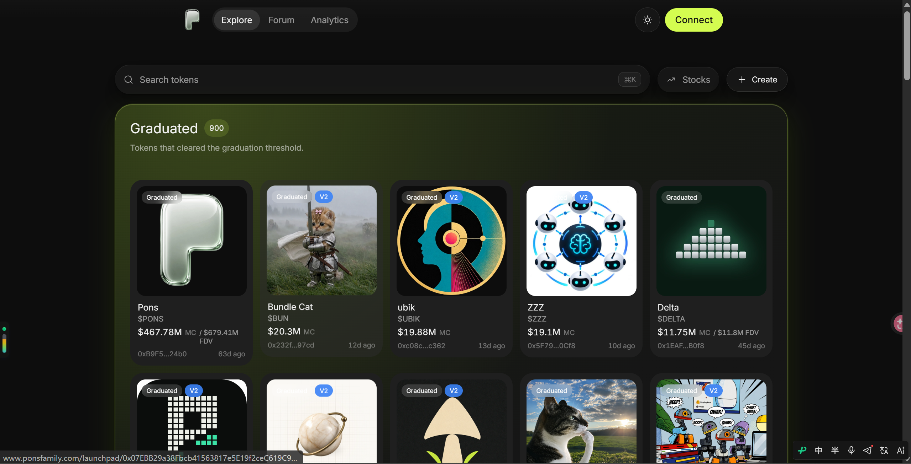
PU-009 pons /launchpad（用户手动截图） Create/Graduated Tab+数量徽章；卡片网格：价格/24h 涨跌带色/市值/毕业进度条/创作者头像
313642c9…02d27
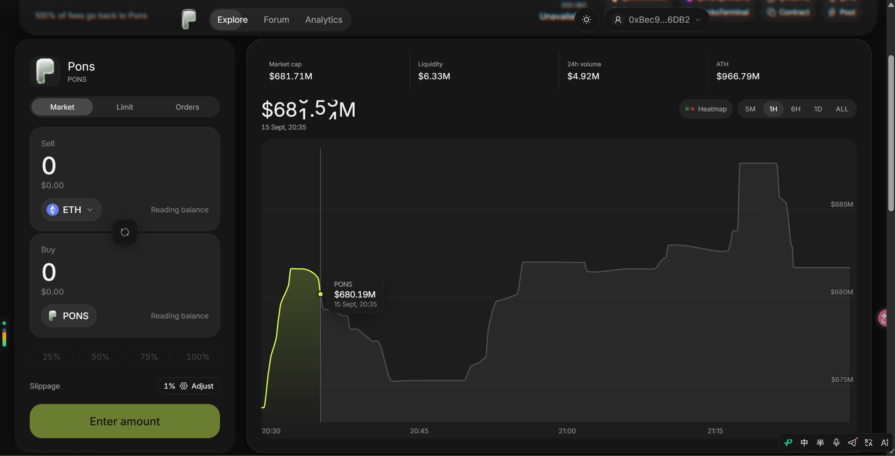
PU-009d pons 代币详情（用户手动截图） bonding→graduated 阶段指示器；Market/Limit/Orders 三 Tab（Orders=挂单列表+取消）；订单簿深度条；降级横幅
3bae39d0…21ba
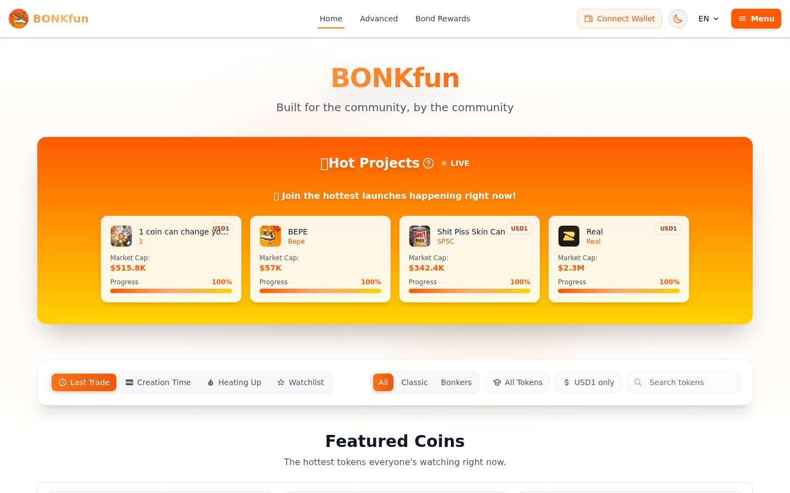
PU-002 letsbonk 列表 过滤标签（全部/即将结束/进行中/已结束）+卡片网格+进度条
3a0eef28…2253f
PU-008 sunpump（备用站） 列表+创建入口补充样本
5b8374dd…05d8
PU-001 pump.fun：blocked-capture ×3（websocket 挂起；/explore 与 swap.pump.fun 已入 V0-URLS 供 v0 联网观察）。
模块二 · PT/YT（Pendle）
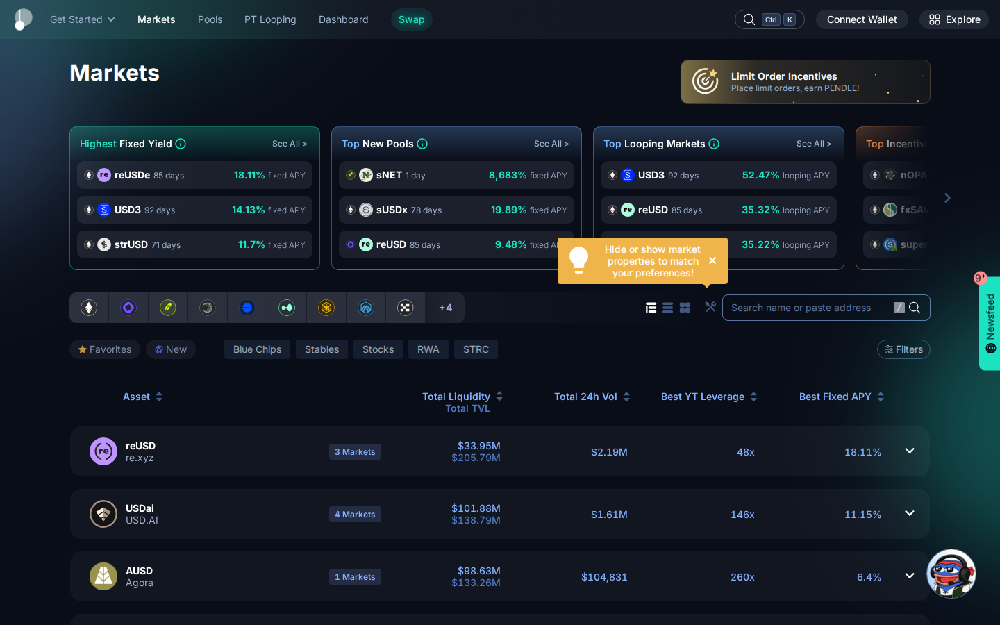
PU-004 Pendle markets 到期日一级维度+APY/价格列（取列设计不取 IA）
3a587ec1…f1311
模块三 · Swap 审阅（Jupiter + demo 内置）
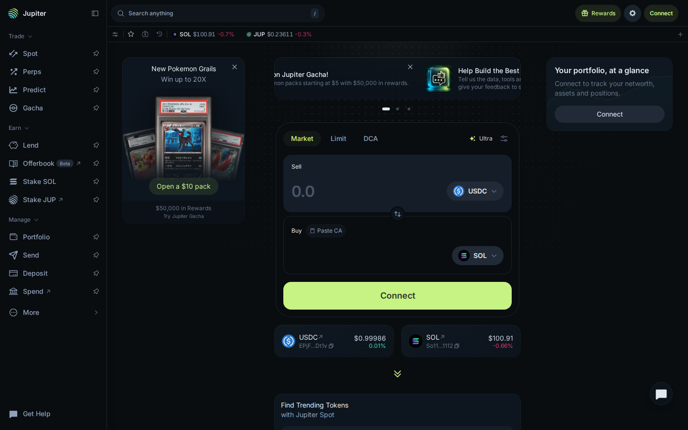
PU-005 jup.ag 双输入+Max+可展开审阅（价格影响/路由/费用/滑点）；demo 已同构此范式
050d1bad…980d0
模块四 · 质押仪表盘（Jito）
PU-006 jito 指标页 TVL/APY 指标卡（Outrun 用表格为主，防 hero-metric 套版）
a0f3efcc…16b3
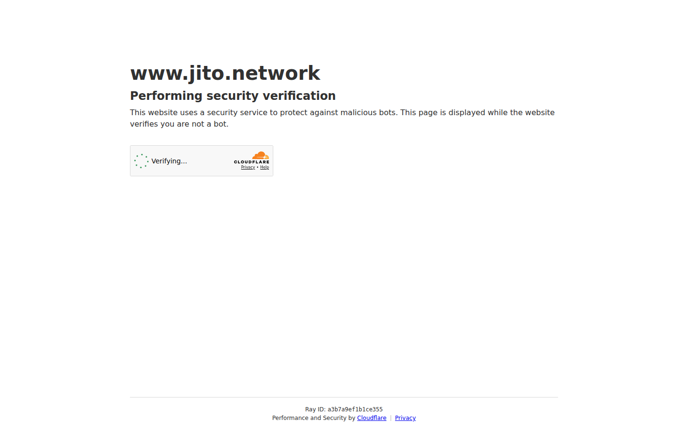
PU-006d jito /staking Liquid staking 主张页+CTA
17d24f84…55ca
模块五 · CDP 与储蓄（Spark）
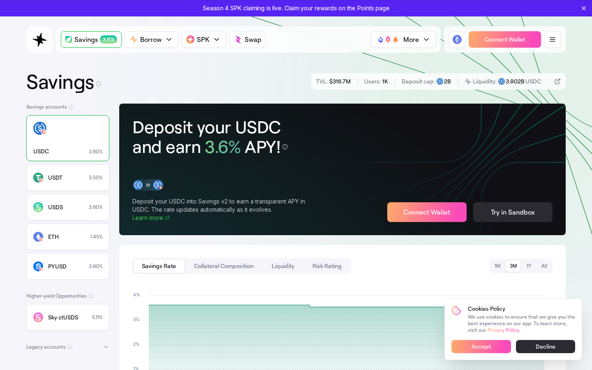
PU-007d app.spark.finance Savings 多资产 APY 看板+TVL+Deposit cap——USR 三族金库直接参照（需加「利率 0=未激活」态）
2c9632ead…f8c9
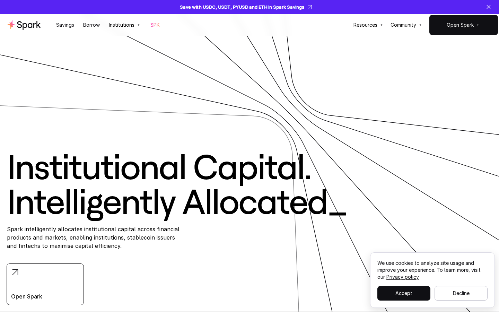
PU-007 spark.fi hero Borrow/Save 双 CTA+利率历史曲线
de650a10…8381